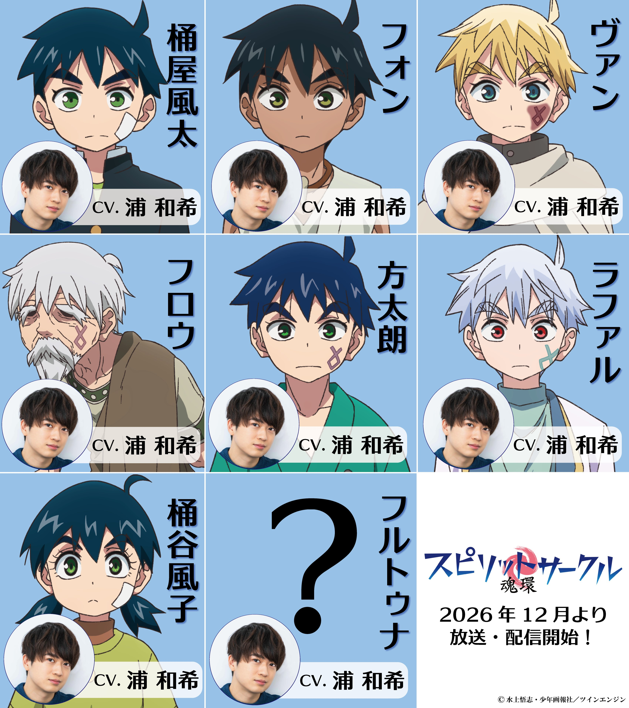

2026년 12월 공개되는 신작 애니메이션,
스피릿 서클의 등장인물 및 담당 성우
오케야 후타 : 성우 우라 카즈키
폰 : 성우 우라 카즈키
반 : 성우 우라 카즈키
후로우 : 성우 우라 카즈키
호타로 : 성우 우라 카즈키
라파르 : 성우 우라 카즈키
오케야 후코 : 성우 우라 카즈키
플투나 : 성우 우라 카즈키
1인 8역.

2026년 12월 공개되는 신작 애니메이션,
스피릿 서클의 등장인물 및 담당 성우
오케야 후타 : 성우 우라 카즈키
폰 : 성우 우라 카즈키
반 : 성우 우라 카즈키
후로우 : 성우 우라 카즈키
호타로 : 성우 우라 카즈키
라파르 : 성우 우라 카즈키
오케야 후코 : 성우 우라 카즈키
플투나 : 성우 우라 카즈키
1인 8역.
얼굴형이 같아보이는게 뭐 평행세계 그런건가?
환생임 전부.
저 작품이 윤회, 전생을 다루는 만화라 전생같은거임
전생 환생 하나는 여캐인데 그대로 남성우네
그리고 이거 예전에 본거같은데 몇년만에 애니화냐
아니 완결난지 10년만이네
이거 한참 예전 만화였던 거 같은데
깨달았도다 어쩌고 자화자찬 씬 극후반부에 나오더니
바로 게임 끝나는줄 알았더니 뽕만채우고는 흐지부지끝나더라
잠만??? 스피릿서클이 애니화된다고? 미친
이거 진짜 갓만화임
캬 이게 나오네 여주도 비슷하게 할텐데
아 그림체 본거 같다 했는데 반지의 기사 그 작가 거구나
오 이거 재밌는데. 근데 저거 전부 환생이잖아
By Hideo Kojima
와 옛날에 되게 재밌게 봤는데
와 이게나오네 ㅋㅋㅋㅋㅋㅋ
출연료 8배!
만력높음 ㅇㅇ
히데오코지마
스피릿서클도 이 작가 수작 중 하나지. 개인적으론 세상끝의 솔테가 또 다른 명작이 될거라고 생각했었는데 작가가 뭔 일이 있는가 거의 절필 중이라...
절필이 아니라 연재속도가 느린거일걸 다른 작품도 연재중임
계간지긴 한데... 너무 느림. 근데 지금 다른거 연재하는건 스토리 작가로 내는거 말고 따로 있나?
나도 그거 말고는 모르는뎅
어디서 봤는데... 만갤에서 봤나
통속의 뇌때문에 새로운 애들이 안태어나던가 하던 그만환가
라바 애니메이션 홍범기와 동급이거나 그 이상
와 이거 진짜 재밌게 봤었는데
똑같이 생겼네
https://youtu.be/Xuii9sjvE8A?si=KHAjhqei_382hQlw
갓띵작 원작이라 기대중
개씹띵작인데 엔딩까지 내주겠지?
D4C ㄷㄷ
인생 만화
와 이게 나오네